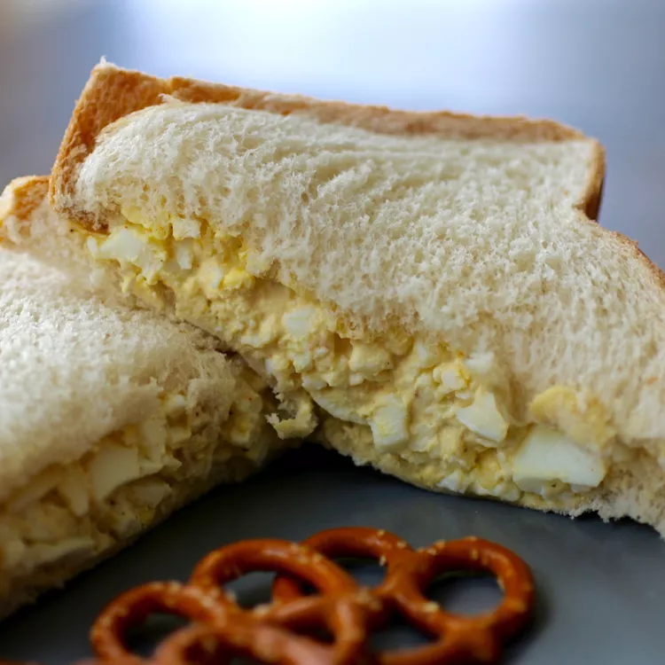

This egg salad recipe is the best and easy to make with chopped boiled eggs, mayonnaise, mustard, and green onions for some color and crunch.
It tastes wonderful in a sandwich and will definitely be devoured at picnics! It's really good on rye.
Ingredients
8 large eggs
½ cup mayonnaise
¼ cup chopped green onion
1 teaspoon prepared yellow mustard
¼ teaspoon paprika
salt and pepper to taste
Steps
Place eggs in a saucepan and cover with cold water.
Bring water to a boil and immediately remove from heat.
Cover and let eggs stand in hot water for 10 to 12 minutes.
Remove from hot water, cool, peel, and chop.
Place chopped eggs in a bowl; stir in mayonnaise, green onion, and mustard.
Season with paprika, salt, and pepper.
Stir and serve on your favorite bread, crackers, or salad greens.